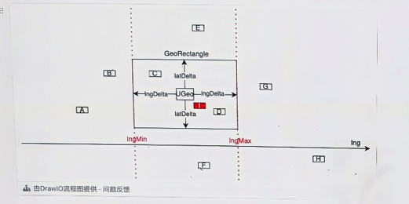
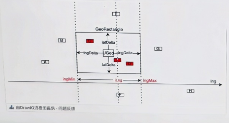

前言
实习内容一，大量门店距离计算优化，好好梳理，好好理解
背景
检索层的机器发现从10点-21点期间，机器的gctime有明显升高，21点后回落
排查发现是这段时间的广告投放涉及大量门店距离计算，耗费了大量cpu和内存回收
问题分析
- 当前计算逻辑会产生大量的临时对象
- 距离计算算法本身，由美团地图服务部的经验，已经是最优的了
简单来说就是勾股定理
我们的业务场景仅仅是在一个城市范围内进行距离计算，也就是说两个点之间的距离一般不会超过200多千米。由于范围小，可以认为经线和纬线是垂直的，如图所示，要求A（116.8，39,78）和B（116.9，39.68）两点的距离，我们可以先求出南北方向距离AM，然后求出东西方向距离BM，最后求矩形对角线距离，即sqrt(AMAM + BMBM)。

得出结论：当前距离计算方法本身已经完善，但是所有门店都参与计算，尝试从门店预筛选的角度优化，尝试缩小参与距离计算门店的数量
预筛选方案
a.城市匹配
请求城市：业务层会将城市id传送给检索层， 用于过滤
门店城市：目前离线计算平台有门店索引
display_shop_character，涵盖所有有效门店的信息，可以让检索层加载门店id和城市id距离计算过程：
存在风险：
- 异地情况会降级为全量遍历，该场景比例不小
- 依赖于当前城市体系，对于海外场景不适用
b.GeoHash匹配
在门店索引
display_shop_character中额外构建GeoHash字段，字符串类型字段 含义 geohash 点评geohash，8位 mtgeohash 美团geohash，8位 检索层加载该索引，仅加载门店id和以上两个字段
用户请求时根据经纬度计算geohash(分点评/美团)
距离计算：
- 精度确定基本思路：
存在风险：
- 极端情况下增加系统开销：例如用户在海外浏览美团国内门店，会执行多次（至多三次，geo精度3->2->1）门店筛选，最终仍无法缩小门店数量，最终降级为全量遍历
- 遍历数量过大，仍然为O(N)，系统开销反而可能更大
c.二分搜索定位法
- 当前主索引的poi按照地理位置信息的lng排序
- 大致算法：
用户查找时，根据用户经纬度和广告指定的距离（目前为10，0000m），计算得到lngDelta和latDelta,得到一个geoRectangle
使用二分查找，找到一个经纬度，在lngMin和lngMax当中如图，找到i
从找到的点i，分别左右到lngMin和lngMax,找到在rectangle里的所有店（过程中通过lat做筛选），与用户计算距离，判断是否比当前最短距离还短

优化距离计算
之前的逻辑会先进行Math.sqrt()，现在是最后，选择了最短距离后才进行开根
验证
随机生成N家门店，为了达到97%以上的匹配率，距离和门店数量成反比